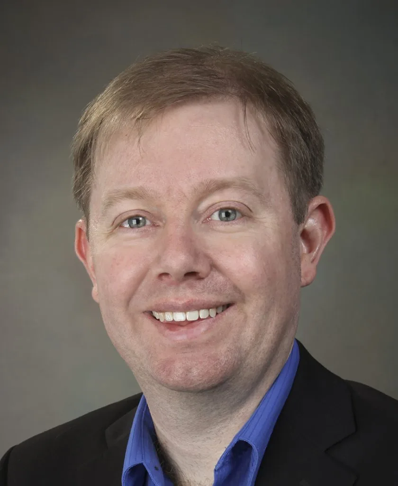
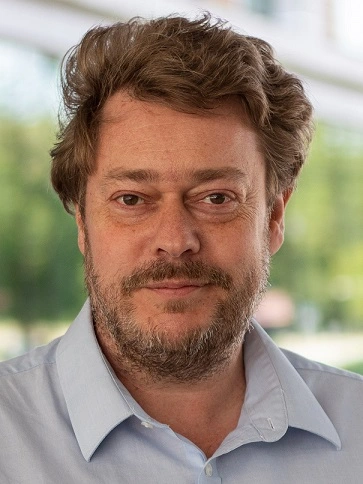
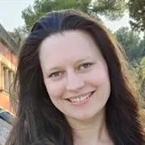
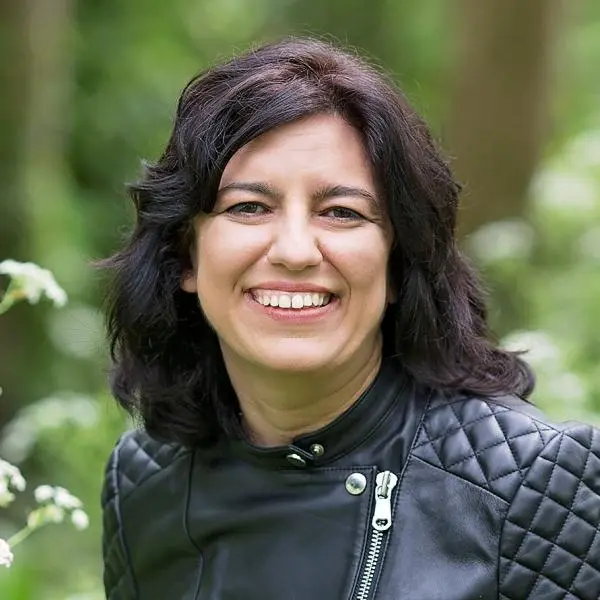
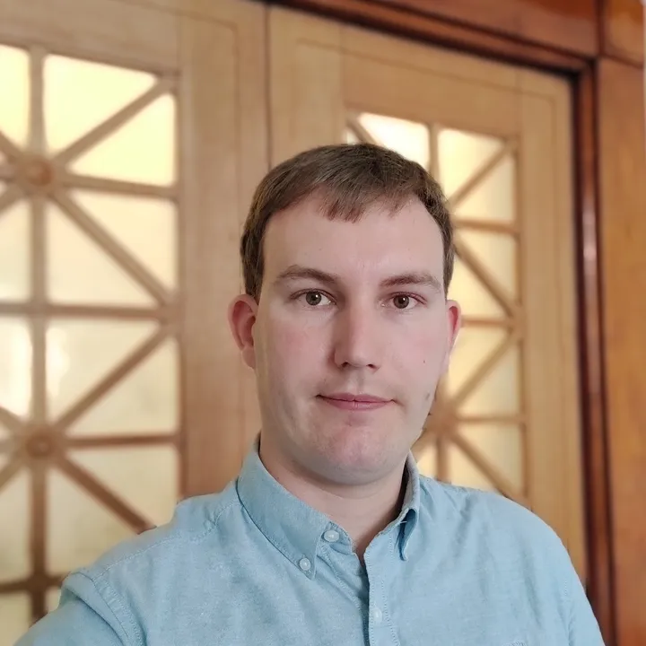
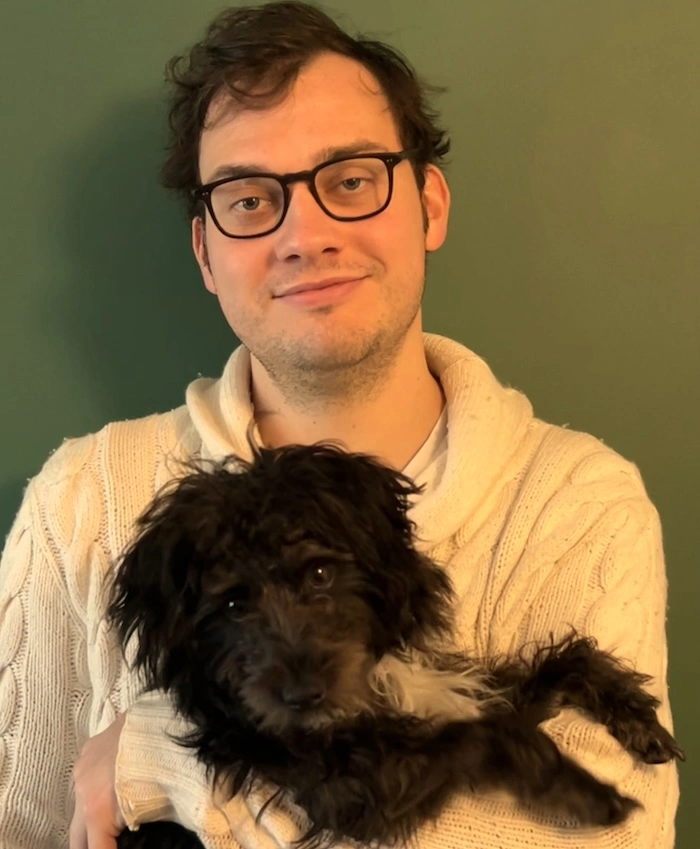

About
Neuromorphic computing is a computing paradigm inspired by biological neural systems. It is based on spiking, event-driven architectures in which memory and computation are closely integrated. Neuromorphic chips have already shown several promising advantages over conventional von Neumann architectures, particularly in terms of energy efficiency.
This workshop will explore the theoretical foundations of neuromorphic computing, with a focus on algorithms and computational complexity. Although the hardware has developed rapidly, the theory has not kept pace. Our aim is to create a forum for discussion on rigorous models of neuromorphic systems, allowing researchers to study their computational power and compare them with classical models of computation. These models must capture not only time and space, but also energy-related resources such as spikes and synaptic operations.
Venue
All talks will be held in the Ashton Lecture Theatre which is on the First floor of the Ashton Building, The University of Liverpool, Brownlow Street, Liverpool, L3 3GJ
The venue is a 15 minute walk from Liverpool Lime street (main train station).
Catering
Tea/coffee and lunch is provided to registered participants.
There will be a workshop dinner on the evening Time/Location TBC. All participants are welcome to attend, however non-speaking participants will have to cover the cost of their own meal.
Funding for Students
We urge all students to keep receipts for expenses as we may be able to refund some expenses after the conference.
Registration
Attendance at the Workshop on Theory of Neuromorphic Computing is free of charge. However, registration is required (deadline 3rd June 2026) to help us with logistics, and to ensure adequate arrangements for the coffee/tea breaks.
Speakers

James B. Aimone (Sandia National Laboratories)

Johan Kwisthout (Radboud University Nijmegen)

Johanna Senk (Sussex)

Eleni Vasilaki (Sheffield)
Schedule
| Time | Activity |
|---|---|
| 10:00 - 10:45 | Coffee |
| 10:45 - 11:00 | Welcome Address |
| 11:00 - 12:00 | Johan Kwisthout - Structural complexity theory for neuromorphic computing |
| 12:00 - 14:00 | Lunch - Bertie & Bella's |
| 14:00 - 15:00 | Johanna Senk - Title TBC |
| 15:00 - 15:30 | James B. Aimone (online) - Title TBC |
| 15:30 - 16:00 | Coffee Break |
| 16:00 - 17:00 | Eleni Vasilaki -Title TBC |
| 17:00 - 17:30 | Discussion and Open Problems |
| Dinner |
Talk Abstracts
Johan Kwisthout - Structural complexity theory for neuromorphic computing
Neuromorphic computing is a new computational paradigm inspired by the energy-lean computations in the brain. In essence, most neuromorphic architectures adopt a spiking neural network model, either simulated in digital hardware (e.g., Intel Loihi or the Manchester Spinnaker model) or in analog circuits (e.g., the Heidelberg BrainScales model). While the obvious applications for these models are event-driven classification tasks on machine-learned circuits (such as anomaly detection), various researchers have also explored non-machine learning tasks, such as finding shortest paths or other graph problems. The temporal, event-driven nature of the spiking model nicely captures the canonical aspects of such tasks, and in some cases, can solve such problems either faster, with way less energy, or both. In this talk I present the basis for a structural complexity theory for spiking-based neuromorphic computing, where energy is a resource on par with time and space. We will look at several models of computation of increasing power and relate them to familiar machine models such as finite state automata, Turing machines, and boolean circuits.
Organisers

David Purser

John Sylvester